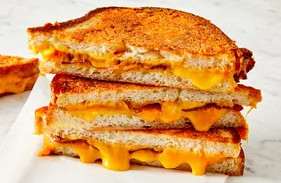

Grilled Cheese Sandwich Recipe

Description
Making a grilled cheese sandwich couldn't be any easier.Here's a brief description of what you can anticipate from this recipe:Combine the butter and Parmigiano-Reggiano cheese. Make the sandwiches with slices of beef strips and one slice of cheddar cheese. Spread the butter mixture on each slice of bread. Cook in a skillet until golden brown on both sides.
Nothing beats the classic pairing of grilled cheese and tomato soup. However, you can also serve grilled cheese alongside a salad, french fries, coleslaw, or any other side dish you love.
Ingredients
- ¼ cup butter, softened
- 1 cup freshly grated Parmigiano-Reggiano cheese
- 8 slices cooked beef strips
- 4 slices Cheddar cheese
- 8 slices sourdough bread
Steps
- In a small bowl, mash together the butter and Parmesan cheese until evenly blended
- Make sandwiches by placing two slices of beef strips and one slice of Cheddar cheese on half of the bread slices. Top with the remaining slices of bread.
- Heat a large skillet over medium heat.
- Spread some of the butter mixture on the top of each sandwich.
- Place sandwiches butter side down in the skillet.
- Spread the remaining butter mixture on the other sides.
- Cook until golden brown on each side, about 3 minutes per side.
- To serve, cut in half diagonally.
back